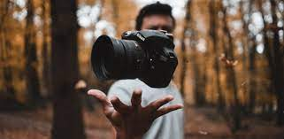

Fotografia
Entendendo os 3 pilares da fotografia
Quando iniciamos na fotografia, é comum que, já que não entendemos muito sobre o funcionamento da câmera, deixamos a câmera no modo automático e já vamos direto registrar os momentos! Não há nada de errado nisso, afinal, é possível tirar fotos muito bonitas nesse modo. Mas, para aqueles que querem dar um passo a mais, e aprofundar o nível e qualidade de suas fotos, é recomendável que se utilize o modo manual! Nesse modo, podemos controlar manualmente o ISO, o diagrafma e obturador, então vamos entender um pouco mais sobre cada um deles, que compõem os 3 pilares básicos mais importantes na fotografia.
Diafragma
-
A abertura do diafragma é o que controla a quantidade de luz, a claridade da imagem e a profundidade de campo. A medição é feita a partir de f-stops que varia de lente para lente,
como, por exemplo a 50mm você vai encontrar a abertura máxima em f1.4 onde a lente está completamente aberta e seu fechamento em f22 onde a lente está quase toda fechada. - O número do f-stops é proporcionalmente inverso a abertura, quanto menor o número mais aberta sua lente vai estar e dessa forma mais luz sua fotografia vai receber.
-
A abertura da lente interfere diretamente na área de foco, de forma que a área de f1.8 usa uma área muito menor de foco desfocando todo o resto da imagem, porém isso depende
muito da distância da câmera e do objeto que está sendo fotografado. Essa abertura é muito comum no uso para fotografia de pessoas em ensaios. -
Assim como o f1.8 a área de foto fica limitada a uma pequena faixa, já uma abertura menor como um f12, por exemplo, já tem o foco em uma área maior, o que é comum em
fotografia de paisagens.
ISO
-
O ISO(sigla de International Standards Organization) é basicamente a definição de sensibilidade do sensor a luz. Essa sensibilidade do ISO varia entre as câmeras de 50 a 16000
(existem modelos que vão muito além desse limite). Quanto menor o número menos sensível será o sensor a luz e quando maior o número mais sensível a luz. Mas é algo que
precisamos tomar cuidado ao trabalhar por que isso interfere diretamente na qualidade da imagem. - Se você utiliza um ISO alto consequentemente sua imagem vai ter ruídos o que não é legal uma vez que será necessário fazer um tratamento para corrigir o que demanda mais
trabalho na pós produção. -
Mas se o ISO alto tem mais ruído então por que utilizar? Simples, locais com pouca luz precisa de uma sensibilidade maior. Por exemplo durante o dia em uma praia o ISO
nunca deve passar de 100 caso contrário a imagem vai estourar no branco, ou seja, perder muitos detalhes(onde muitas vezes é necessário colocar uma velocidade de obturador
mais rápida para compensar a grande entrada de luz). -
Agora se for um ambiente noturno por exemplo e fizer uma foto com o ISO 100 (considerando que não esteja usando flash e nem longa exposição) nesse caso a imagem vai ficar
escura, logo vai perder detalhes também, o que faz a necessidade de você aumentar o ISO de sua câmera.
Obturador
- Tempo de exposição outro pilar importante da fotografia que faz toda diferença na sua foto. A velocidade basicamente é controlar o tempo que seu sensor vai receber luz.
- E o cálculo de quanto tempo será a velocidade é baseada em frações de 1 segundo, logo a velocidade 1/200 seria 1 segundo dividido em 200 e a câmera pegaria a fração desse
cálculo para abrir e fechar o obturador. -
Vamos entender um pouco mais sobre isso, basicamente se você colocar uma velocidade lenta em um ambiente bem iluminado sua foto vai receber luz por muito tempo e nesse
caso vai ficar superexposta, ou seja, vai ficar estourada no branco. -
E quando falamos por muito tempo esse tempo pode ser exatamente como o exemplo acima a velocidade 1/200 em uma foto tirada em uma praia por exemplo quando o sol está
no seu auge a foto ficaria superexposta. Agora se utilizar essa mesma abertura(exposição) em um ambiente com pouca luz dependendo do ISO que pode ficar escura